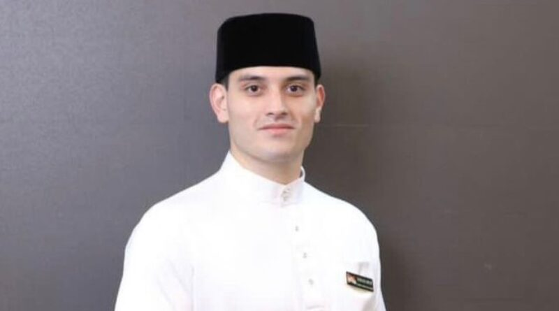

Barisan Pimpinan
PIMPINAN & JENTERA KEMPEN
Tak Banyak Alasan bergerak melalui kepimpinan UMNO Putrajaya, jentera pemuda, dan kerja akar umbi. Tengku Muhammad Hafiz menjadi wajah utama penerangan dalam gerakan ini.

Tengku Adnan Tengku Mansor
Ketua UMNO Bahagian
Dr Tengku Muhammad Hafiz
Ketua Penerangan
Jentera Pemuda
Mobilisasi Kempen